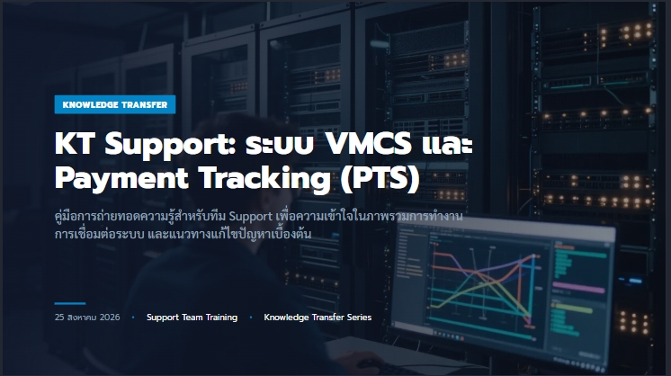

Slide 01 | Knowledge transfer
VMCS / Payment Tracking (PTS)
คู่มือส่งมอบความรู้สำหรับทีม Support เพื่อรับมือ Incident, Integration, Vendor Account และฟังก์ชัน Vendor หลังการเชื่อมต่อ VMCS / SAP
Support Handover | 25 August 2026
Knowledge Transfer
รวมเอกสาร, สไลด์, และภาพประกอบสำหรับทีม Support เพื่อทบทวนภาพรวมระบบ, การเชื่อมต่อ, และแนวทางตรวจสอบปัญหาเบื้องต้น

Support guide rebuilt in HTML from the KT-Payment handover document and deck.
KT-Payment VMCS Payment Tracking PTS - Support Team Training